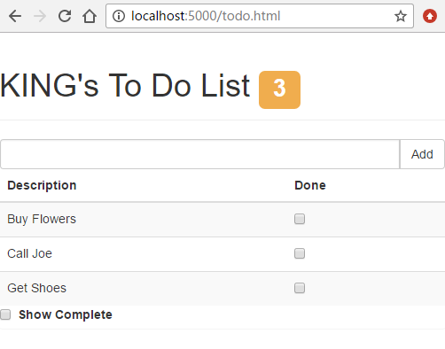

angularjs入门笔记-6-做一个todo小程序
先做一个静态HTML程序，一个todo小程序（待办事项小应用）, angularjs版本为1.2
界面效果如下图:

目录组织结构：
1 | angularjs #项目目录 |
node插件connect创建静态服务器
其中server.js使用到了connect,而connect分为两种版本，一个2.x,一个是最新的3.x
参考node报错：connect.static is not a function
安装connect2:npm install connect@2.x.x --save
若使用2.x则创建Web服务器的代码如下：1
2
3
4
5var connect = require('connect');
connect.createServer(
connect.static("./angularjs")
).listen(5000);
使用如下命令安装connect3:npm install connect --savenpm install server-static --save
而在最新的connect3版本中，将非核心功能分离，由一些中间件实现1
2
3
4
5
6
7var connect = require('connect');
var serverStatic = require('serve-static');
var app = connect();
app.use(serverStatic("./angularjs"));
app.listen(5000);
todo.json中存储着一些数据，这些数据使用ajax动态加载到ng应用中1
2
3
4[{ "action": "Buy Flowers", "done": false },
{ "action": "Get Shoes", "done": false },
{ "action": "Collect Tickets", "done": true },
{ "action": "Call Joe", "done": false }]
todo.html
为了方便，将所有的html和ngjs逻辑都在todo.html中，
同时将代码解释以注释的形式直接写在代码中，更加清晰和方便。1
2
3
4
5
6
7
8
9
10
11
12
13
14
15
16
17
18
19
20
21
22
23
24
25
26
27
28
29
30
31
32
33
34
35
36
37
38
39
40
41
42
43
44
45
46
47
48
49
50
51
52
53
54
55
56
57
58
59
60
61
62
63
64
65
66
67
68
69
70
71
72
73
74
75
76
77
78
79
80
81
82
83
84
85
86
87
88
89
90
91
92
93
94
95
96
97
98
99
100
101
102
103
104
105
106
107
108
109
110
111
112
113
114
115
116
117
118
119
120
121
122
123
124
125
126
127
128
129
130
131
132
133
134
135
136
137
138
139
140
141
142
143
<!-- 1.1 -->
<!-- data-ng-app="todoApp" 将html标签和todoApp这个模块绑定， -->
<!-- 此处告诉ng从此处标签开始，其内部的标签即ng的范围，即模块的作用范围 -->
<html data-ng-app="todoApp">
<head>
<title>TO DO List</title>
<link href="bootstrap.css" rel="stylesheet" />
<!--1.0 -->
<!--导入angularjs库，一般是放在head处，在dom之前加载，防止html中ng未初始化-->
<script src="angular.js"></script>
<script>
// 1.3
// 定义模型，将数据从HTML中分离出来，本模型仅仅预先定义了一个user属性，
// 其他的数据可以使用ajax动态获取
var model = {
user: "KING"
};
// 1.2
// ng应用是由模块组成的(一个或多个)，由angular.module函数定义模块，
// 此处定义模块名为todoApp为第一个参数，
// 第二个参数是该模块的依赖模块名，即若本模块需要依赖其他已存在的模块，则依次写在数组内即可，
// 若没有依赖也不能不传值，至少为一个空数组
var todoApp = angular.module("todoApp", []);
// 3.3
// 将使用ajax的方式获取数据，ajax回调数据作为模型中的items存储，
// 此处的函数参数为$http, 为ng提供的默认服务之一
todoApp.run(function ($http) {
// get返回的是一个promise对象，
$http.get("todo.json").success(function (data) {
model.items = data;
});
});
// 3.1
// 使用ng提供的过滤器接口，定一个新的过滤器，控制显示item的详细数据
todoApp.filter("checkedItems", function () {
// 此处的checkedItems过滤器需要两个参数，一个items为ng提供，表示应该被过滤的对象集合
// showComplete为手动提供的参数，用于确定是否需要包含过滤后的数据
return function (items, showComplete) {
var resultArr = [];
angular.forEach(items, function (item) {
if (item.done == false || showComplete == true) {
resultArr.push(item);
}
});
return resultArr;
}
});
// 2.1
// 在module返回的模块上使用controller创建一个控制器，
// 参数为控制器的名称，以及一个函数，该函数定义了控制器的功能，同时向用户展示的视图提供数据
// 函数的参数为内置的服务或其他自定义的服务，这些对象提供了一些方法和功能，以便本控制器使用
// $scope表示ng提供的内置服务，一般用于向视图暴露数据和功能
todoApp.controller("ToDoCtrl", function ($scope) {
// 2.3
// 在scope对象上一定一个todo属性，同时将model赋值给它
// 这样是为了模型数据能被视图（通俗理解为界面或dom）使用，
// 也就是说，一般向视图加载的数据都应该通过scope，
// 而不是直接使用js操作dom，修改其value，text，attr，html的值
$scope.todo = model;
// 2.7
// 在scope上定义函数，用于计算未完成item的数量
$scope.incompleteCount = function () {
var count = 0;
angular.forEach($scope.todo.items, function (item) {
if (!item.done) { count++ }
});
return count;
}
// 输出数量外观等级class的函数
$scope.warningLevel = function () {
return $scope.incompleteCount() < 3 ? "label-success" : "label-warning";
}
// 用于添加新item的函数，该函数接收一个参数，表示新item，同时设置新item的状态
$scope.addNewItem = function (actionText) {
$scope.todo.items.push({ action: actionText, done: false });
}
});
</script>
</head>
<!-- 2.2 -->
<!-- 使用ng-controller将标签和控制器绑定，也就是说，一个模块可能拥有多个控制器 -->
<body ng-controller="ToDoCtrl">
<div class="page-header">
<h1>
<!-- 2.4 -->
<!-- 使用{{ 表达式 }}将scope中的数据绑定带dom上，也就是说不需要用js的原生语法或jq去操作dom中的数据-->
<!-- 此处的todo即$scope上的todo属性,user即model上的user属性 -->
{{todo.user}}'s To Do List
<span class="label" ng-class="warningLevel()"
ng-hide="incompleteCount() == 0">
{{incompleteCount()}}
</span>
</h1>
</div>
<div class="panel">
<div class="input-group">
<input class="form-control" ng-model="actionText" />
<span class="input-group-btn">
<!-- 2.8 -->
<!-- ng-click表示每次点击都将actionText当做参数传入addNewItem中，而actionText与input相互绑定。即输入框内的值 -->
<button class="btn btn-default" ng-click="addNewItem(actionText)"> Add </button>
</span>
</div>
<table class="table table-striped">
<thead>
<tr>
<th>Description</th>
<th>Done</th>
</tr>
</thead>
<tbody>
<!-- 2.5 -->
<!-- 使用ng-repeat指令迭代todo.items的值， -->
<!-- 3.2 -->
<!-- 使用|表示对item的数据过滤，同时使用自定义的checkedItems过滤器和ng默认提供的orderBy过滤器 -->
<!-- orderBy使用的排序字段为action，即item的action属性 -->
<tr ng-repeat="item in todo.items | checkedItems:showComplete | orderBy:'action'">
<td>{{item.action}}</td>
<!-- 2.6 -->
<!-- 使用ng-model双向绑定当前item的done属性到复选框上 -->
<td><input type="checkbox" ng-model="item.done" /></td>
</tr>
</tbody>
</table>
<div class="checkbox-inline">
<!-- 2.6 -->
<!-- -->
<label><input type="checkbox" ng-model="showComplete"> Show Complete</label>
</div>
</div>
</body>
</html>